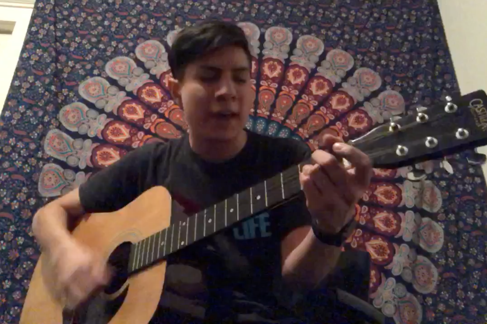
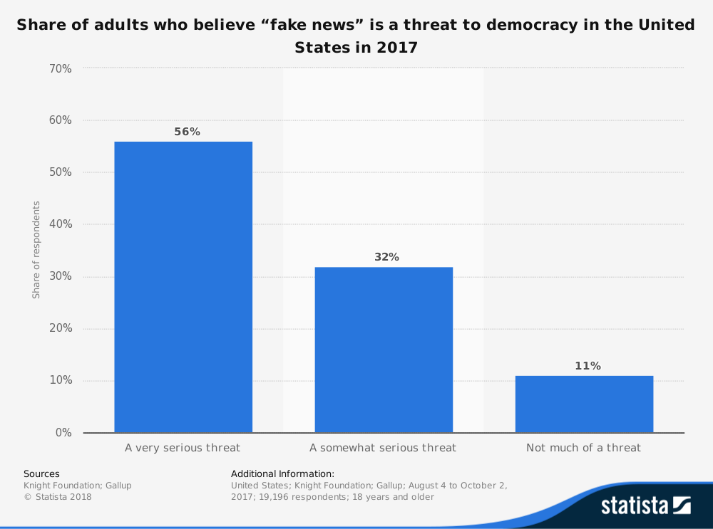
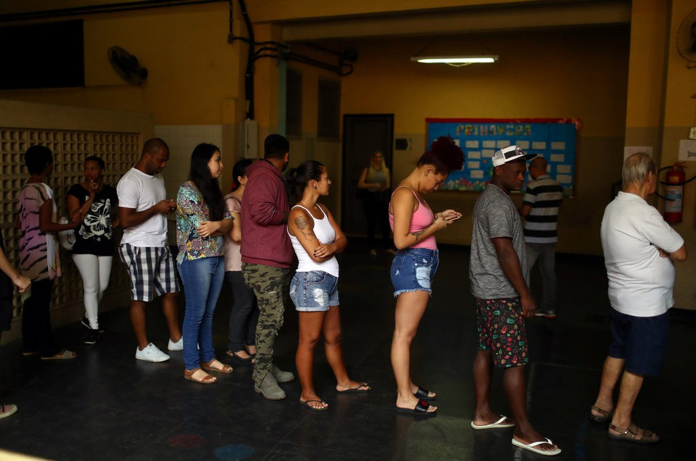
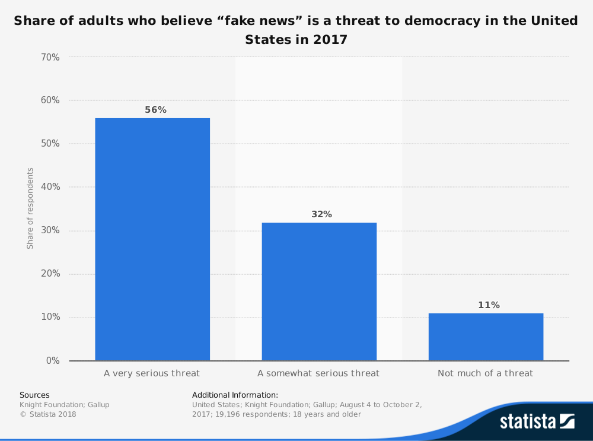
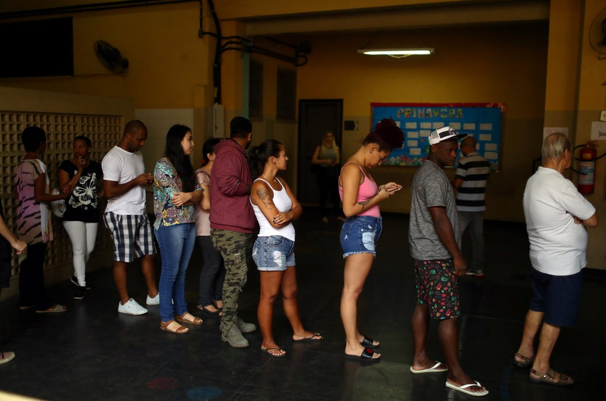

Passion Project
This was the first passion project I have ever done for a class, which meant that I really did not understand much of it. As we began selecting topics, I found out that a passion project had to do with something we really wanted to accomplish, and to me, it was the process of being able to sing and play guitar at the same time. In fact, I have been wanting to do this for ever since I bought my first guitar back in 2010. At the time, I first had to learn how to play guitar, which I did through some guitar lessons during summer school. After those lessons were over, I moved onto teaching myself everything else about guitar playing. Unfortunately, I had to stop playing the guitar due to having too many assignments as I entered College. Fast forward to 2018, I began playing the guitar once again, this time as a project assignment. Further, this project taught what my actual passion was, and I also interviewed my former high school teacher, since it was because of him that I began loving my passion. Lastly, I learned what the effects of my passion has on others through research.

What was my actual passion? It was not just guitar playing and singing, but I actually have a passion for the arts. Other than being versed in guitar playing, I also have experience with playing other musical instruments, especially in percussion. Furthermore, in another field of art, I also have a passion for photography and cinematography, as I have done both as a hobby and as side projects. As an artist, I have been able to express myself through performing arts and fine arts. Moreover, art is pretty much everywhere. If you look around, someone had to design objects to make them look the way they are. For example, as I am staring at my computer screen, a MacBook Pro, I know Jonathan Ive had the final call on the design of the model, according to Apple (2018). This also made me realize that my high school music teacher was right all along, so I decided to interview him, after all, he was the one that influenced me to have a passion for the arts.
According to the interview with Leonardo DaSilva and his own data throughout the years, he states how students involved in art programs have graduated or are in the process of graduating college, unlike students that did not join these art programs (DaSilva, 2018). Furthermore, DaSilva states how music “teaches skill sets that will help you push pass difficult times [not necessarily because of academics].” I went further and researched what the impacts and importance of art programs have on students. According to PBS’s writer,
Grace Hwuag (2018)
, art programs do have developmental benefits in children in fields like motor skills, language development, decision making, visual learning, inventiveness, cultural awareness, and improved academic performance.
Overall, this passion project has helped me realize what my true passion is. I went from wanting to simply wanting to play the guitar and singing to understanding what the role of the arts played in my career as a student.
The Rise of "Fake News"
When did it start?
According to Columbia University Professor Andie Tucker, fake news is deeply rooted in American Journalism. in 1690, the first North American news paper got shut down after printing a fabricated story (Vendantam S., Cohen R., & Boyle T., 2018)
Is it a threat to Democracy in the US?

Brazil's Elections
From August 16 to October 7, the New York Times, the Federal University of Minas Gerais, the University of Sao Paulo and the fact-checking platform Agencia Lupa, collected and analyzed posts in 347 groups that are open to the public and focused on Brazilian politics. 50 political images were selected and examined that were widely shared out of the 100,000. Only 8% of the 50 most widely shared images were considered truthful (The New York Times, 2018).

Image retreived from https://www.nytimes.com/2018/10/17/opinion/brazil-election-fake-news-whatsapp.html
Jon Favreau's tweet
On May 27, 2018, Jon Favreau, a former Obama speechwriter, tweeted an image of two detainees lying on mats on the ground in a holding cell from an Arizona Republic story in 2014. This image was then widely shared by many public figures stating how Trump's administration was treating the children that were being deported. He then deleted the tweet and stated how the image was from 2014 and how today, in 2018, the government is creating unaccompanied minors (Forbes, 2018).

Image retrieved from https://www.forbes.com/sites/kalevleetaru/2018/06/15/could-google-image-search-help-fight-fake-news-on-social-media/#724d63574537
When did it start?
According to Columbia University Professor Andie Tucker, fake news is deeply rooted in American Journalism. in 1690, the first North American news paper got shut down after printing a fabricated story (Vendantam S., Cohen R., & Boyle T., 2018)
Is it a threat to Democracy in the US?
Brazil's Elections
From August 16 to October 7, the New York Times, the Federal University of Minas Gerais, the University of Sao Paulo and the fact-checking platform Agencia Lupa, collected and analyzed posts in 347 groups that are open to the public and focused on Brazilian politics. 50 political images were selected and examined that were widely shared out of the 100,000. Only 8% of the 50 most widely shared images were considered truthful (The New York Times, 2018).
Image retreived from https://www.nytimes.com/2018/10/17/opinion/brazil-election-fake-news-whatsapp.html
Jon Favreau's tweet
On May 27, 2018, Jon Favreau, a former Obama speechwriter, tweeted an image of two detainees lying on mats on the ground in a holding cell from an Arizona Republic story in 2014. This image was then widely shared by many public figures stating how Trump's administration was treating the children that were being deported. He then deleted the tweet and stated how the image was from 2014 and how today, in 2018, the government is creating unaccompanied minors (Forbes, 2018).
Image retrieved from https://www.forbes.com/sites/kalevleetaru/2018/06/15/could-google-image-search-help-fight-fake-news-on-social-media/#724d63574537